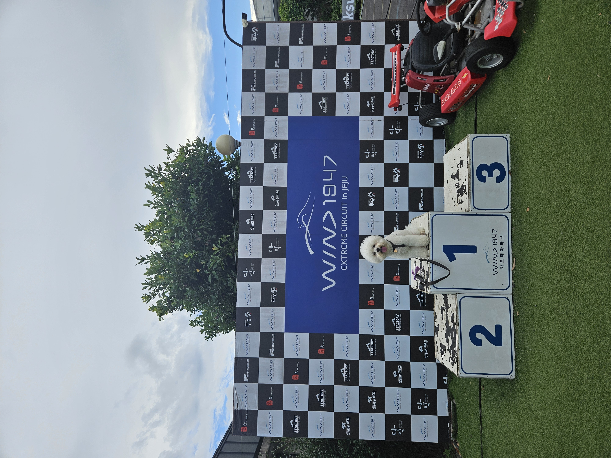

박준규 자기소개서

Information
이름 : 박준규
나이 : 27
취미 : 운동(축구, 골프)
연락처
📧parkjungyu09@gmail.com
📞+821095407787
velog블로그
GitHub
저는최근에 숭실대학교 산업정보시스템공학과를 졸업했습니다. 저는 위 학과를 졸업했지만 사실 신소재공학과로 입학을 해 3학년에 전과를 했습니다. 대학교에 입학할 때부터 개발직 또는 보안쪽으로 가야겠다고 생각만 하고있었습니다. 1학년때에는 친구들과 놀기 바빠 학점을 챙기지 못하였고 2학년때에는 전역 후 전과를 위해 학점을 조금 챙겼지만 3학년 전과 후 학업을 따라가지 못하였습니다. 사실 따라가려는 노력을 안했습니다. 그렇게 졸업을 하였고 개발직으로 취업을 하고 싶다는 생각만 가지고 있고 대학 재학중에 아무것도 이뤄낸것이 없습니다. 제 자신이 너무 한심하지만, 또 저의 장점이 강한 멘탈입니다. 일단 목표를 잡았습니다. 무조건적으로 1년안에 취업할것입니다. 강사님께서 말씀하신대로 노력은 절대적인것이다, 1년 후에 저를 돌아봤을 때 정말 열심히 했구나 생각이 들수 있게 공부할것입니다. 그렇게 해도 취업이 안된다면 강사님께서 책임지시고 취업시켜주세요. 현재 학원에서는 월 수 리눅스 수업을 9월 11일부터 듣게 될 예정이고, 평일, 주말반 모두 6개월 과정을 마치고 정처기 자격증을 딴 후, 프로그래머스 부트캠프에 들어가는것이 현재 목표입니다. 마지막으로 아직 정확히 정하지는 않았지만 백엔드를 방향으로 잡고 하고있습니다.